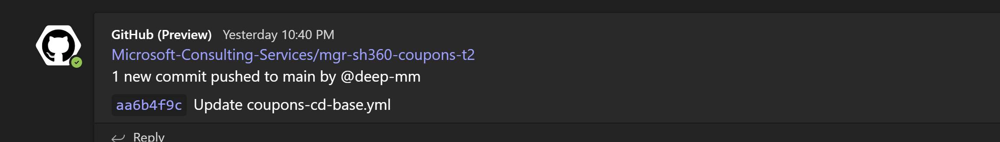
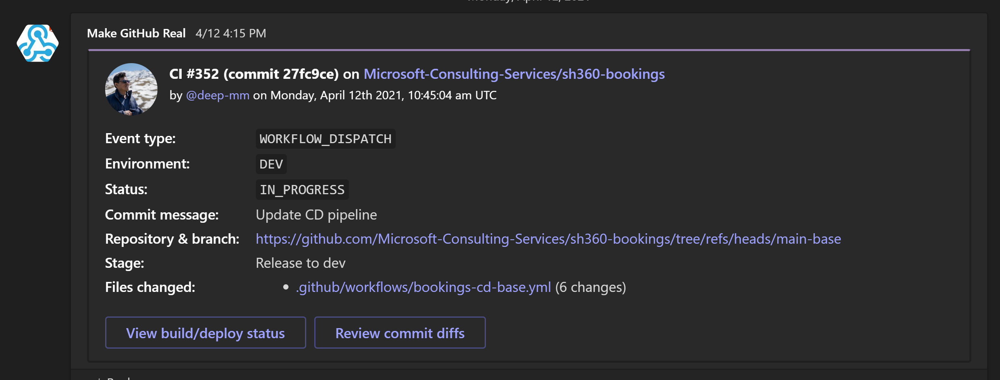

Module 1: GitHub with Microsoft Teams
Microsoft Teams is an online communication and team collaboration tool that’s part of the Microsoft Office 365 Suite. This module will provide an understanding of how to effectively manage GitHub operations and increase productivity by making use of Microsoft Teams as a collaboration tool.
Exercise 1: Microsoft Teams - GitHub App
Microsoft Teams has a wide range of apps available that can be used directly from teams chat. One such app which is available out of box by GitHub. GitHub App integration for Microsoft Teams gives you and your teams full visibility into your GitHub projects right in your Microsoft Teams channels, where you generate ideas, triage issues and collaborate with other teams to move projects forward.
To complete this exercise, you will install the GitHub App in one of your channels and configure it to receive notifications from one of your GitHub repositories.
Prerequisites - Exercise 1
- Microsoft Teams must be installed.
- A team must be created for this lab, with 1 channel to receive GitHub notifications.
Open the Microsoft Teams application.
From your Apps, search GitHub.
Select GitHub App published by Microsoft Corporation.
To add this into the channel which you created in the prerequisites, click on the down arrow and select Add to a team.
Search for the channel name (Depending on the team you are in, for e.g. If you are in Team A configure this is Team-a channel), and select Set up a bot.

Lets configure the GitHub app to receive notifications from a particular GitHub repository.
Type the following command in the channel conversation:
@GitHub (Preview) subscribe {org_name}/{repo_name}.Note
Depending on your setup and the team you are in, enter appropriate org_name & repo_name. This can be found in your GitHub repository.
If prompted to Install app, select Install. It will redirect you to your GitHub config page, there select appropriate organization, and select the repository you want to subscribe to, and select Save changes.
Return back to the teams channel and re-run the same command again
@GitHub (Preview) subscribe {org_name}/{repo_name}, and this time it should subscribe to that particular repository successfully.
Now whenever an update is made to a PR or an issue, that will be notified directly in this teams channel. Thus teams can start discussions based on these notifications and take actions right away. An example is shown below:

You will see this in action as we start using GitHub in Continuous Integration Lab, and at the time of raising a PR, notification will pop in this teams channel notifying the members about the PR and requesting for approval. Stay tuned for amazing integrations 🚀!.
Exercise 2: GitHub Action - Workflow Status
In previous exercise we learnt how we can receive notifications about PR,commits and issues. But the GitHub app doesn't provide workflow status update notifications, and for that we have incorporated a GitHub action - Microsoft Teams Deploy Card into our workflow to send workflow status directly to Microsoft Teams channel.
In this exercise we will just provide an overview about this action but we will see this in action during the Continuous Integration Lab.
GitHub workflows can have multiple actions within it. To send the status of workflow (in-progress, failed), we make use of an action from GitHub Marketplace, Microsoft Teams Deploy Card.
This action has various customization options of what content should the message send as well as how the message card must look. Have a look at an example card below:

You will see this in action as we start using GitHub in Continuous Integration Lab, when we run the build workflow and the status of workflow is visible in the teams channel. Stay tuned for amazing integrations 🚀!.
Key Takeaways
- GitHub repositories can be connected with Microsoft Teams channel using GitHub App, so that notifications about various actions like PR, commits and issues, directly into the teams channel.
- Custom actions from GitHub marketplace can be configured into GitHub workflows to receive notifications about workflow status into teams channel.